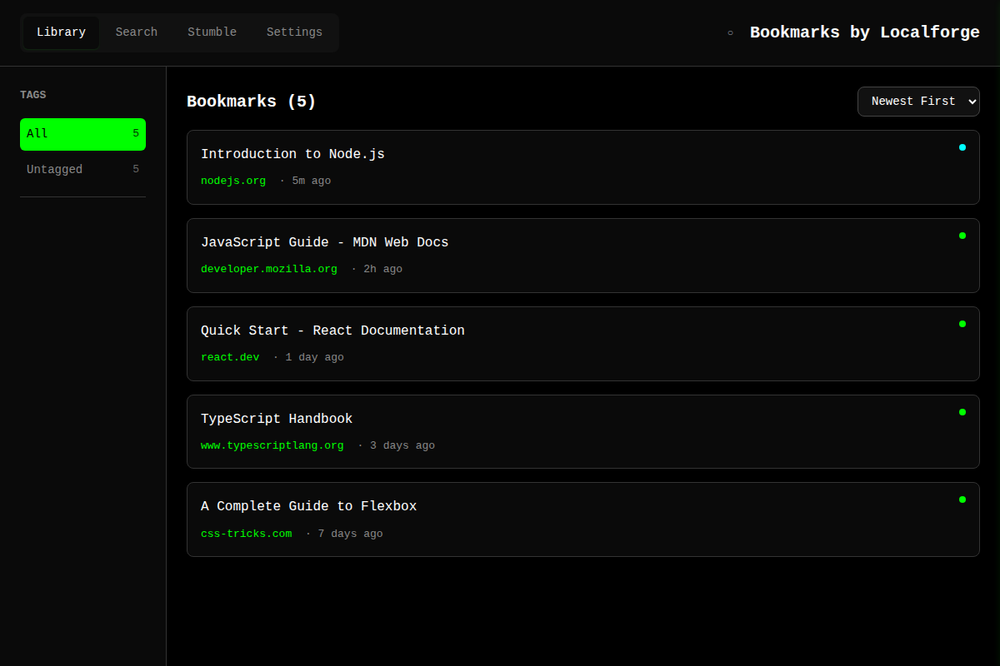

Bookmarks by Localforge
A knowledge discovery tool for your saved web pages
> Uses your browser to capture a snapshot of the DOM and process it with Mozilla's readability.js
> Semantic search powered by embeddings
> 100% local storage. Works with any OpenAI-compatible API.
Screenshots

Popup

Library

Search
Features
Content Extraction
Converts HTML to clean Markdown using Mozilla's Readability engine
AI-Generated Q&A Pairs
LLM generates 5-10 smart question-answer pairs about each bookmark for RAG search
Tag-Based Organization
Flat organization with tags. Click to filter, type to create new tags instantly.
System Health Indicator
Visual status in header shows processing state. Click to see diagnostics and job history.
Bulk Import
Import multiple URLs at once with validation and progress tracking.
Export & Backup
Export your full collection or individual entries.
How It Works
1.
Capture — Click the extension or press the shortcut. Full page HTML is saved locally.
2.
Extract — Main content is extracted and converted to clean, readable Markdown.
3.
Generate — The configured LLM creates Q&A pairs about the content.
4.
Embed — Each Q&A pair is converted to vector embeddings for semantic search.
5.
Discover — Search by meaning, browse by tags, or stumble upon forgotten gems.
Privacy First
> All bookmarks stored in your browser's IndexedDB — never uploaded to any server.
> Only extracted Markdown is sent to your configured API for processing.
> You control the API endpoint — use local models with vLLM or llama.cpp for full privacy.
> No default queries to any server, and no telemetry.